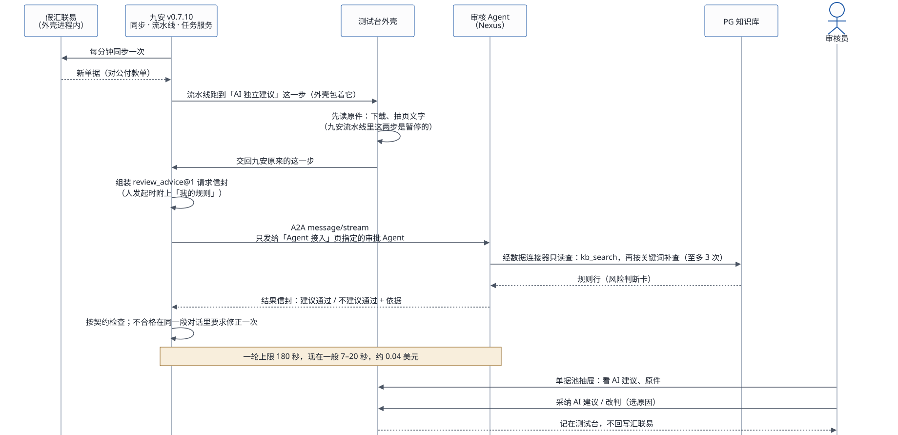

系统由哪几块组成见架构与技术评估；这一份讲每件事按什么顺序做、谁做、用什么工具、做完是什么样，最后一节是对这些工作流的评估：哪里慢、哪里靠人、怎么改。
1. 一页看懂
| 工作流 | 谁 | 什么时候 | 用什么 | 详细 |
|---|---|---|---|---|
| 一张单从进来到复核 | 九安自动；审核员复核 | 每张对公付款单 | 九安的任务服务、审批 Agent、单据池 | 第 2 节 |
| 接入一个 Agent | Agent 开发、发布者、管理员 | 新 Agent、换 Agent | Nexus 网页、「Agent 接入」页 | 第 3 节、快速上手第 4 节 |
| 规则入库、读清单、检索 | 管理员 | 制度有变化时 | 「知识库」页、PG 知识库 Agent | 第 4 节 |
| 改代码 | 应用开发 | 每次变更 | 测试、deploy.、端到端 |
第 5 节、部署与迭代规范 |
| 改审核 Agent 的提示词 | Agent 开发 | 换知识库内容、审核口径变化 | audit- |
第 6 节 |
| 部署一整套 | 部署的人 | 新环境 | kb/、audit-、poc/ |
第 7 节、交付指南 |
| 换机器、迁域名 | 运维 | 换机型、换账号 | migrate-、kb. |
第 8 节 |
| 出包、交接 | 维护人、项目负责人 | 每个交付版本 | make- |
第 9 节、交付包指南 |
| 日常运维 | 运维、值班 | 每天、出问题时 | 日志、健康检查、单据池 | 第 10 节、运维与后续迭代 |
2. 一张单从进来到复核

- 进来：九安每分钟从（假）汇联易同步一次，新单进单据池。测试台上管理员可以在
/poc/intake模拟来单一张，约 1 分钟后同步进来。 - 读原件：流水线跑到「AI 独立建议」这一步时，外壳先把原件读完（下载、抽页文字）。九安流水线里这两步本来是暂停的，不先读的话 Agent 只能回「原件未能核验」。
- 组装请求：九安的任务服务按
review_advice@1组装请求信封：单据字段、付款明细、原件的脱敏页文字。审核员从单据页手动发起时，外壳再附上这个人的「我的规则」（自动的那一轮不附）。 - 路由：只发给「Agent 接入」页上管理员指定的审批 Agent，用它启用时粘贴的调用密钥。
- 审核：审核 Agent 先用
kb_search查知识库，没对口的再按关键词补查，查满 3 次就作答，回结果信封（建议通过 / 不建议通过，加上依据：引用的规则编号、原件页码）。 - 检查：九安的 A2A
适配层按契约检查回答，不合格就在同一段对话里要求修正一次；还不合格记
AI_INVALID_RESPONSE。 - 复核：单据池的「AI 建议」一栏出现结论；审核员打开抽屉看建议和原件，「采纳 AI 建议」或「改判」（选原因，选「其他」要写备注）。复核只记在测试台，不回写汇联易；工作台跟着更新「待我复核」和人工改判率。
单据池里的状态：「AI 建议」一栏是 还没有建议 → 审核中 → 建议通过 / 不建议通过（出不来的是「没有完成」「未给建议」）；「复核」一栏是 等 AI 建议 → 待复核 → 已采纳 / 已改判。单据有了新版本或者又跑了一轮，已复核的变成「AI 建议已更新」，要重新复核。
一轮出不来时：
| 记下的错误 | 原因 | 怎么办 |
|---|---|---|
AGENT_ |
还没指定审批 Agent，或者它停用了、密钥失效了 | 管理员在「Agent 接入」页设审批 Agent 或换钥匙 |
AI_（密钥失效） |
Nexus 不认这把调用密钥 | 管理员「换钥匙」，再在抽屉里「重新审核」 |
AI_ |
Nexus 暂时不通、额度用完，或者 180 秒没答完 | 稍后在抽屉里「重新审核」；总是超时就查 Agent 一轮查了几次库（运维第 2.7 节） |
AI_ |
修正一次后还不合契约 | 重新审核；总是这样就改提示词 |
CUSTOM_ |
「我的规则」加上单据放不进一次请求 | 让这个人删减规则 |
数字（Nexus 的调用记录）：2026-11-01 改过提示词以后，一轮的中位 9.5 秒、九成在 15 秒内，约 0.04 美元；改之前中位 24 秒、九成 104 秒、0.11 美元。
3. 接入一个 Agent

- 建好、发布（Agent 开发）：用编码工具加
nexus-ai-operator 在 Nexus 上建 Agent、写提示词、试用、建发布并打开
A2A；要进审批流的，名片要声明
review_advice@1。 - 签发调用密钥（发布者本人，只能在 Nexus
网页上）：每个发布一把，
nxa_开头，只显示一次，当面交给管理员。 - 启用（管理员）：「Agent
接入」页上这个发布一行「启用」，只粘贴调用密钥；九安当场读名片、发一次
tasks/get（不花钱），通过就加密存库，页面上只显示指纹。 - 设为审批 Agent、测试（管理员）：要审单的才设，要写原因，同一时间只有一个；测试有文本、请求信封、单据三种，都记进调用记录。
整个过程不改文件、不部署、不重启。Agent 在 Nexus 上改了版本，点「重新验证」；密钥失效，在 Nexus 上签一把新的、「换钥匙」。一步步的操作见快速上手第 4 节。
4. 知识库

4.1 规则入库
- 准备原文：现在有效的规则是审批风险判断卡。原页面是
HTML，先用
kb/convert/risk-cards/转成可入库的 .docx。页面只收 Word（.docx，最大 20 MB）；PG 知识库 Agent 本身也收 Excel、PDF、Markdown，但那要在 Nexus 上直接发给它。制度原文不进仓库、日志和截图。 - 上传：管理员在「知识库 ›
上传制度」选文件，写制度标识（例如
risk-cards）、版本说明，文档名预填成文件名。页面先读一次制度清单，按清单预填。 - 入库：外壳存下文件、记一条上传记录，在后台经 A2A 把
ingest交给 PG 知识库 Agent（上限 5 分钟，同一时间只跑一个）；它的工具解析、和库里的对比、只写变了的行，向量在 PG 里生成。页面每 2.5 秒看一次上传记录。 - 结果：「已入库」（写入、删除、不变各几条）、「没有变化」（同一份再传一次）、或者失败（规则编号属于另一份制度时整份拒绝，库里原来的不动）。入库之后，存着的制度清单和这份制度的详情作废，下次打开页面重新读。
4.2 读清单和详情
外壳把 PG 知识库 Agent
回的操作清单、制度清单、每份制度的详情存在九安库的
poc_kb_cache 里，打开页面直接从库里读（约 2 秒，问一次
Agent 要 4–10 秒）。只有这几种时候才重新问 Agent：
- 库里还没有（测试台重置或新部署之后的第一次）；
- 管理员点「刷新清单」（同时清掉存着的详情）；
- 在这一页入库、下线、恢复、删除之后（那份制度的清单和详情作废）；
- 调用密钥被拒、回复不合格（操作清单作废）。
页面上写着清单是什么时候从 Agent 读的。在别处改了知识库（例如
kb/deploy.sh 入库、在 Nexus
上直接操作），要点一下「刷新清单」。
4.3 检索
「检索」弹框写一个问题（板块、金额可空），外壳每次现问 PG 知识库
Agent 的 search，回前 8
条和它们的原文。这一步不存缓存。
4.4 审核 Agent 查库
审核 Agent 不经外壳：它经 Nexus 的 PostgreSQL 数据连接器直接发只读
SQL，先 kb_search 取 5 行（关键词用拆开的费用 /
付款类型名称加上事由里的一两个词，找审批矩阵行时才加板块和金额），没对口的再按关键词
ILIKE 补查；每次检索记进
kb_search_log。连接器交给模型的结果每格截到 80 字、最多 30
行，所以提示词让它分列取长文。kb_search
怎么把问题变成向量、怎么排序、为什么不走索引，见架构与技术评估第 6 节。
4.5 换知识库内容时要一起做的
2026-10-31 把有效的规则从审批矩阵换成风险判断卡时，提示词还要求找审批路径和最终审批人，Agent 一轮查 11–16 次去找库里没有的东西，一轮从十几秒拖到超时。所以换知识库内容要当成一次变更：入库 → 核对审核 Agent 的提示词（第 6 节）→ 跑端到端 → 再上线。
5. 开发与变更

规矩：
- 先写会失败的测试，再改代码；
- 端到端测试通过、项目负责人确认之后才推送，不是开发完、测完就推；
- 不用
--no-verify跳过检查； - 不打印密钥、环境配置，制度原文不进日志和截图；
- 会改线上（AWS、Nexus）的操作能演练的先演练：
kb/deploy.sh、migrate-data.sh、audit-agent/setup.py、apply.py都有--dry-run，给人看过再执行；deploy.sh没有演练，它动 AWS 之前先跑全部测试和构建；换型、销毁要输入栈名确认。
每一步：
| 步 | 命令 | 做完是什么样 |
|---|---|---|
| 本机测试 | cd poc/；cd poc/；cd poc/；kb
和 audit-agent
的测试；docs/ |
全过 |
| 部署到测试台 | DEPLOY_ |
脚本自己再跑一遍测试和构建，装到实例上、重启，健康检查通过 |
| 端到端 | DEPLOY_ |
26 条全过（网页 15 条、接口 11 条），约 6 分钟、1–3 美元；会先重置测试台的库，「Agent 接入」的启用记录保留 |
| 推送 | 项目负责人确认后 git push |
开发仓库 main 和远端一致 |
不同的变更（代码、提示词、规则、栈参数、模板、密钥）各怎么改、怎么测、怎么退，见部署与迭代规范第 4、6 节。
6. 改审核 Agent 的提示词
- 存底稿：网页上改过的话，先把线上版本存成新的底稿文件。
- 改
audit-agent/prompt.yaml：同时把agentVersion的日期和序号加一；环境值只写占位符（连接器、Agent 名、模型）。改完更新tests/fixtures/里的期望文件，跑python3 -B -m unittest discover -s audit-agent/tests。 - 演练：
python3 audit-agent/apply.py --env poc/infra/env/<环境>.env --base <底稿> --dry-run，看线上到渲染结果的 diff。 - 下发：去掉
--dry-run再跑一次。它写提示词、重存发布的动态配置（只改提示词不重存的话，A2A 用的还是旧快照）、核对。 - 留底：在
audit-agent/prompt-history/<日期>/放改前、改后、比对和下发记录。 - 验证：跑端到端；看调用记录里一轮的时长和查库次数有没有变。
写提示词的几条教训：不要求知识库里没有的东西；查询次数写死；关键词照库里规则行的写法；用不到的工具别挂（开发者快速对接指南第 5 节）。
7. 部署一整套
正式环境的顺序：
- PG 与知识库后端：客户用自己的 SSH
密钥起主机，
deploy.env写AGENT_PATCH_PROMPT=false（审核 Agent 还没建），只跑数据层kb/deploy.sh preflight,db,network,egress,connector（先--dry-run），再verify；规则等 PG 知识库 Agent 部署好后从知识库页上传。 - Nexus 上的 Agent 与发布：PG 知识库 Agent 照
customer-deploy/knowledgebase-writer-agent-pg/部署；审核 Agent 用audit-agent/setup.py、apply.py（都先--dry-run）；发布者本人签发两把调用密钥。 - 前端：环境配置里写上知识库 Agent 的发布编号
KB_PG_PUBLICATION_ID（不写的话知识库页说「还没配置」），poc/infra/deploy.sh（测试 → 构建 → 建栈 → 装构件 → 健康检查），然后管理员在「Agent 接入」页启用两个发布、指定审批 Agent，在「知识库」页上传制度。 - 验收：端到端测试，对着交付指南第 5 节的验收表逐项看。
测试台三块在一台机器上，实例由 deploy.sh
建，所以先建栈、装前端，再部署 PG 和
Agent，最后回到页面上启用。每一步的命令和「做完是什么样」见交付指南第 4 节。

8. 换机器、迁域名
2026-11-02 从 t3.large（栈 andon-finance-poc）搬到
m7g.xlarge（栈 andon-finance-m7g）时实际走过的顺序：
- 另建一个栈：新的环境配置，
deploy.sh（经 SSH，本机连不到弹性 IP 时走 EC2 Instance Connect 端点）。 kb.sh db在新机器上起 PG 容器。migrate-data.sh：旧环境只读导出 MySQL、PG 和状态目录，整包加密经构件桶搬过去，新环境换上、逐表核对行数和规则表的 md5（那次 199 项一致）。kb.sh connector：把 Nexus 的数据库凭证密钥和连接器指到新 PG，两个 Agent 跟着走。- 端到端测试。
- 迁域名：最后同步一次（
migrate-data.sh --skip-pg），旧栈把站点名改成别的、腾出别名，新栈接上；站点停约 5 分钟。
旧栈没删之前，kb.sh connector
用旧环境的配置再跑一次就能让 Nexus 指回旧 PG。
要知道的：栈模板里实例的用户数据哪怕只改一行注释，栈更新时实例也会停机再开一次，容器都重启（11-02 晚上改名时站点因此停了约 28 分钟）；只改资源的逻辑编号用 CloudFormation 的 stack refactor，不重建资源。

9. 出包、交接
- 出包：
docs/delivery/make-package.sh。- 先跑全部检查，哪一项没过就停下、不出包：部署脚本、外壳、知识库工具、审核 Agent 的单元测试，几个 Agent 的语法检查，图和 HTML 是不是最新的。
- 只带进了 git 的文件，没
git add过的列出文件名、不带。 - 把 AWS 账号和 EC2 标识脱敏成 AWS 文档的示例值。
- 扫描密钥，有就不出包。
- 出
dist/<版本>.tar.gz和.sha256，包里有每个文件的 sha256。
- 交接仓库：
make-package.sh --export <交接仓库的工作副本>，同一份白名单，不带测试证据；在那边提交、推送。这个仓库是公开的，公司的代码安全工具要求先批准再推送。 - 对着清单验收：交付包指南第 6 节，加上端到端的结果。
- 当面交接：
poc/infra/secrets.env；九安开发包按版本号另给；各人的 Nexus API 密钥各人在自己的 Nexus 网页上生成。
10. 日常运维
每天看一眼：
- 健康检查：
https://<站点>/poc/healthz回ok； - 单据池有没有新的 AI 建议，可以模拟来单一张来看；
- 「Agent 接入」页的审批 Agent 是不是就绪；
- 服务日志里有没有成串的错误码：
journalctl -u andon-jiuan，每个码的意思见运维第 1.2 节。
健康检查只看服务是否就绪，看不出调用密钥失效、Nexus 出错。所以每天看单据池这一步不能省（第 11 节有改进建议）。排障按运维第 2 节。

11. 工作流评估：瓶颈与改进
| 地方 | 现在 | 问题 | 建议 |
|---|---|---|---|
| 调用密钥 | 只能由发布者本人在 Nexus 网页上签发，管理员在页面上粘贴 | 每个环境、每个发布都要人做两步，自动化部署做不到底 | 平台的限制，接受；把这两步写进验收清单（已写），生产环境的密钥单独签发、单独保管 |
| 知识库 Agent 的固定操作 | 每个操作都是整轮模型（4–10 秒、约 0.04 美元） | 读操作已经靠缓存避开；入库、检索、下线还是慢 | 给它换更快、更便宜的模型，跑契约测试确认它照样逐字回 JSON；或者如果 Nexus 支持，不经模型直接调工具 |
| 端到端测试 | 一次约 6 分钟、1–3 美元，会重置共用的测试台 | 不能随手跑；和别人的试用冲突 | 另建一个预发栈专门跑端到端；平时只在部署后、推送前跑 |
| 测试与部署都在一台电脑上 | 维护人本机跑测试、发起部署、出包 | 没有第二个人能复现；换电脑要重装一套工具（Node、AWS CLI、uv、pandoc、mermaid-cli、Chrome） | 接一个持续集成跑单元测试和
build-；部署仍由人触发 |
| AI 通路的监控 | 健康检查看不出 AI 建议出不来 | 密钥失效、Nexus 出错要等人发现 | 定时的合成检查（每小时一次请求信封测试或模拟来单），失败就告警 |
| 提示词和知识库内容 | 换内容时要人记得一起改提示词 | 忘了就会一轮查十几次、超时 | 把「换知识库内容」写成固定的变更流程（第 4.5 节），端到端里加一条查库次数的上限 |
| 栈更新 | 用户数据一改实例就重启 | 改注释也会停站 | 模板测试里加一条：用户数据变了就提醒；改之前先
backup.、挑没人用的时候 |
| 长请求被 CloudFront 掐断 | CloudFront 等源站最多 60 秒 | 启用时验密钥（最长 200 秒）、知识库的同步操作（最长 2 分钟）超过 60 秒时页面报超时，后台其实还在跑 | 把这些操作改成和入库一样先回 202、页面轮询；或者调高源站读超时 |
| 交接仓库 | 公开仓库，推送要公司批准 | 这次被拦，手动推送 | 先确认审批；不该公开就换到批准的位置 |